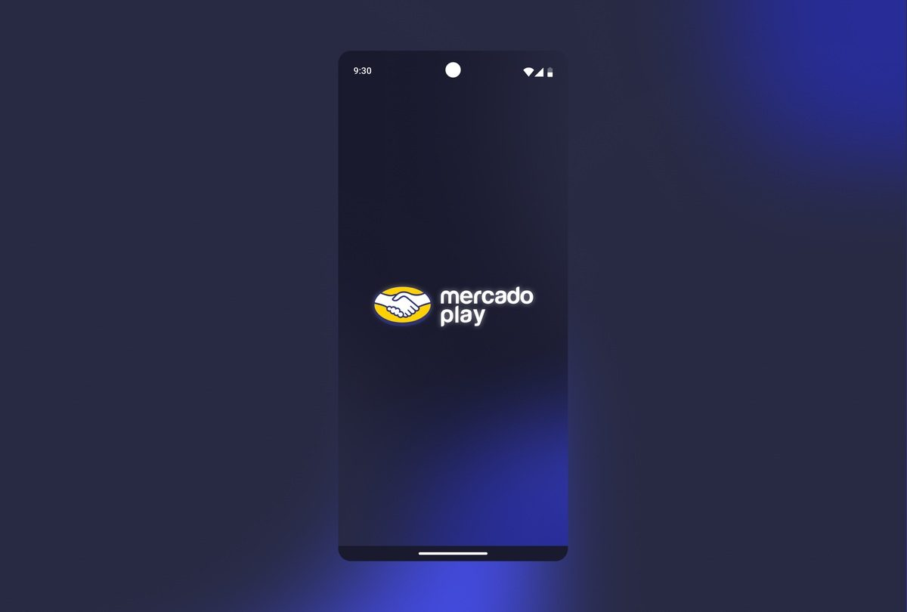
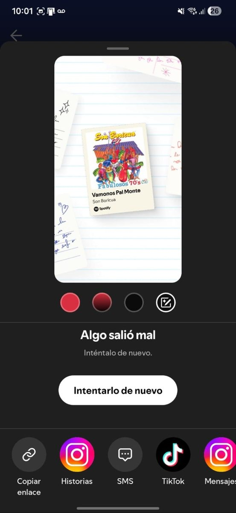
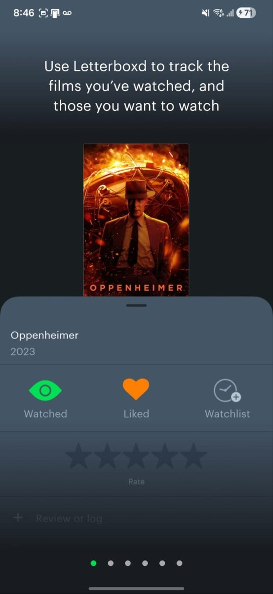

What if your friends
were the algorithm?
Designing Tu Círculo, a social recommendation feature for Meli Play, Mercado Libre's free streaming platform, so people can discover content through the people they actually trust.

At a glance
- The problem: Usage on Meli Play dropped 4% in one month. Research revealed users don't trust algorithmic or critic-based recommendations. They trust people they know.
- My role: Design a social recommendation feature from concept to high-fidelity screens in 6 days, based on real user pain points from the challenge brief.
- The approach: Competitive benchmarking of Spotify, Letterboxd, Netflix, and HBO Max, followed by a visual-first design sprint.
- The outcome: Tu Círculo, a social layer integrated throughout the app that surfaces content recommended by friends and family.
The context
Meli Play is Mercado Libre's free streaming platform, offering movies, series, documentaries, and more across Latin America. Despite a broad content catalog, usage had declined month over month, and the research team had already surfaced the reason: people weren't finding what to watch.
The problem wasn't content availability. It was trust. The people they'd talked to painted a clear picture.
"I have a WhatsApp conversation with myself to save all the movies my coworkers recommend, so I can watch them on Meli Play later."
"I never follow recommendations from critics or people I don't know."
"Technology isn't my thing. When I open Meli Play, I'd love to have a place with content highlighted by my family."
"My dad always forgets the name of the series he wants to recommend, and I end up googling the title or the actors."
Every quote pointed to the same gap: the platform had no mechanism for social trust. People were building their own workarounds outside the app, which meant the platform was losing engagement to WhatsApp groups and word of mouth.
The algorithm knows what you've watched. It doesn't know who you trust.
The design process
With the research already defined in the brief, I focused my energy where I could add the most value: understanding the competitive landscape and designing a solution that felt native to Meli Play's visual identity.
1. Benchmarking
Before sketching anything, I analyzed how the strongest streaming and social apps handle recommendations. Each platform does something worth borrowing.

Spotify
Sharing songs and playlists with contacts is core to the experience. The social layer is integrated, not added on.

Letterboxd
Built entirely around social trust. Friends' reviews and watchlists surface first, making discovery feel personal rather than algorithmic.
Netflix
The "Top 10 in your country" proved social proof drives clicks even with strangers. With trusted contacts it would be far more effective.
Key insight
No streaming platform had fully committed to trusted-circle recommendations as a primary discovery surface. This was the opportunity.
2. Defining the solution
The insight from benchmarking pointed to a single concept: a dedicated social layer built around trusted groups. Not followers, not algorithmic friends, but actual circles of people the user knows and trusts.
I called it Tu Círculo. The idea was to make social recommendations a first-class feature, not a sidebar afterthought. This meant integrating it at every touchpoint: the home screen, the content detail page, and a dedicated tab in the navigation.
The solution
Tu Círculo adds a trusted social layer to Meli Play through three integrated touchpoints, each designed to feel native to the app rather than bolted on.
Home: De Tu Círculo para ti
A dedicated carousel on the home screen surfaces content recommended by people in your circles. It appears below the main hero carousel, giving it prime placement without competing with editorial content. Users immediately see what their trusted network is watching, without leaving the app or opening WhatsApp.
Tu Círculo tab
A dedicated section in the bottom navigation, marked with an infinity symbol to represent ongoing connection. Here users can create and manage multiple circles, each with its own group, such as family, work colleagues, or film friends. Each circle aggregates recommendations from its members into a curated feed.
Share from any content
From any movie or series, users can share it directly to a circle with a personal message. The recommendation arrives as a rich content card within the circle's feed, with the date, a poster thumbnail, and a message field. No switching apps, no forgetting titles.
Lo que dicen los demás
A social review feed that shows what people in your circles are watching and saying. Unlike critic scores or algorithmic ratings, these are reactions from actual contacts, which addresses Virginia's pain point directly: she never follows strangers' recommendations.

Screen 1: Home
The "De Tu Círculo para ti" carousel sits just below the hero, making trusted recommendations immediately visible.
Use arrows or keyboard ← → to navigate
What I learned
Visual design is a strategic argument. With the research already defined in the brief, my job was to make the solution feel so obvious and usable that there was no question about the direction. Every visual decision, from the infinity icon for Tu Círculo to the card format and the placement of the carousel, was a functional argument, not decoration.
Six days forces you to prioritize ruthlessly. I had to choose which interactions to design in detail and which to leave implicit. That constraint made the deliverable sharper: a clear, well-executed core feature rather than a sprawling system with rough edges everywhere.
The concept has further potential. Tu Círculo could extend well beyond streaming. If someone in your circle watches a documentary about coffee, the platform could recommend relevant Mercado Libre products. The social layer becomes a bridge between content and commerce, which is a natural fit for Mercado Libre's ecosystem. That connection between what you watch and what you buy is something I'd love to explore further, along with richer microinteractions and animations that make the social moments feel alive.